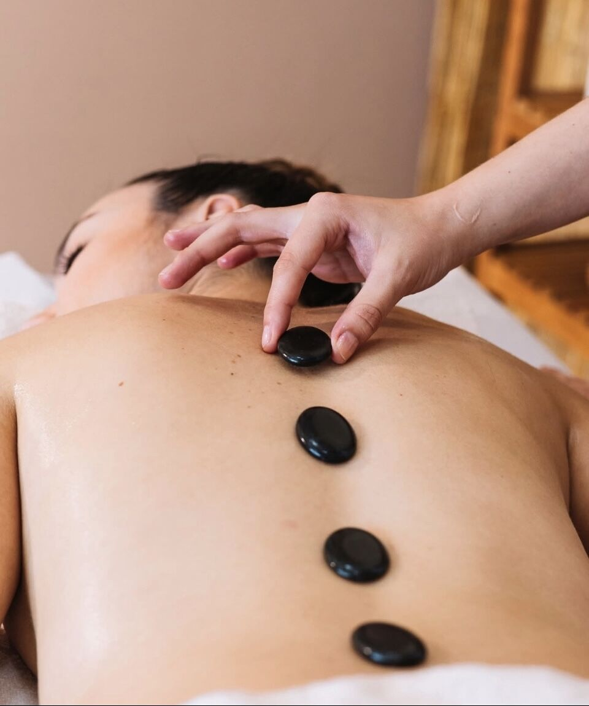
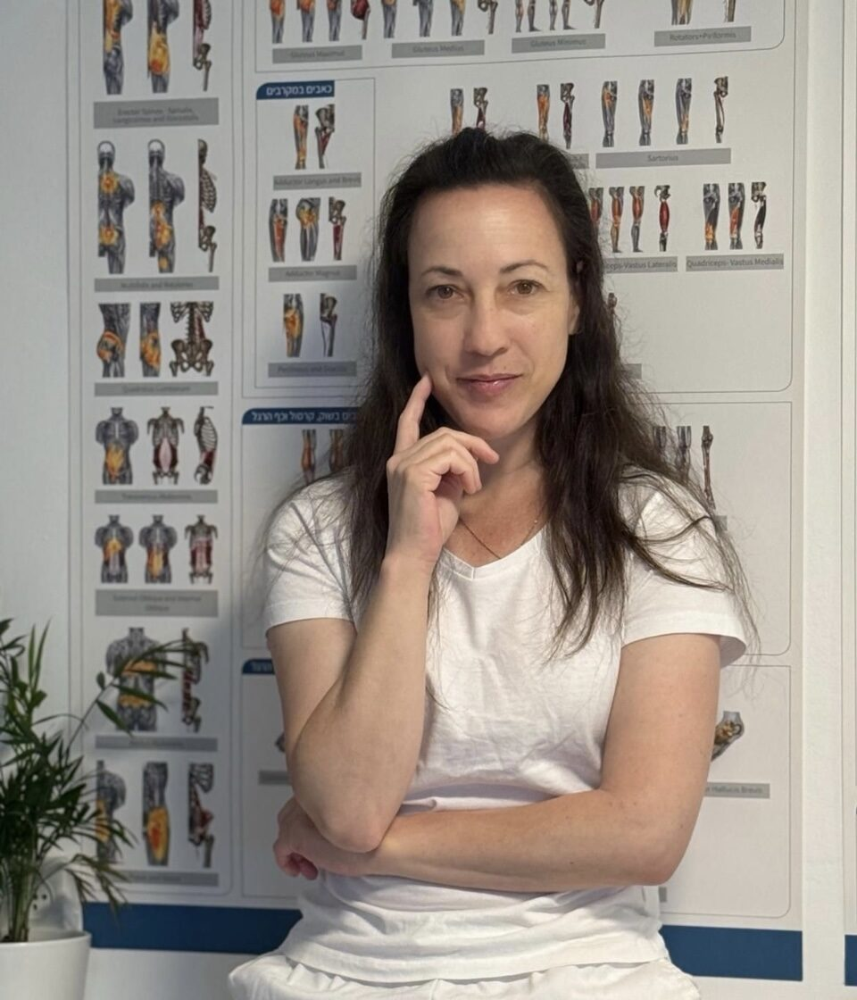
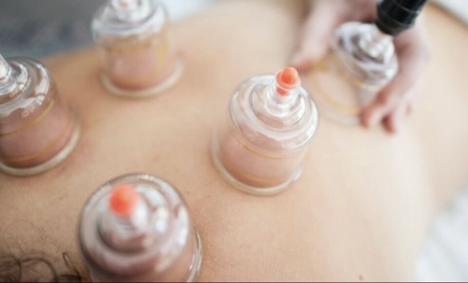
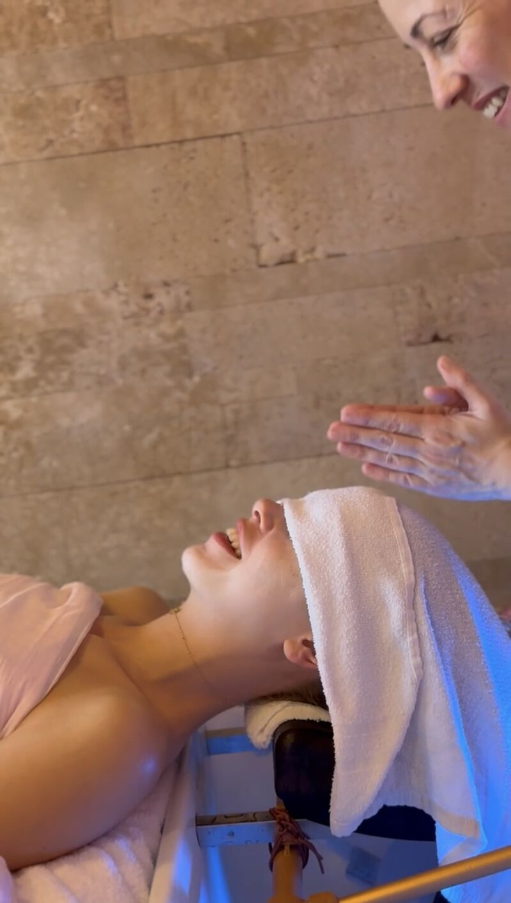

תמונה להמחשהIllustrative photo“הטיפול היסודי והעמוק ממש הביא לשיפור משמעותי”
“The thorough, deep treatment really brought a significant improvement”
קונספט לדוגמה שנבנה עבור ליאן ברגר – עיסוי רפואי מקצועי בקרית אתא · זה אינו האתר הרשמי של העסקA sample concept built for Lian Berger – professional medical massage in Kiryat Ata · This is not the business’s official website
עיסוי רפואי מקצועי בקליניקה ברחוב הרב הרצוג 6, קריית אתא.Professional medical massage at a clinic on 6 HaRav Herzog St, Kiryat Ata.

המפות שעל קיר הקליניקה, ליד תמונות מהעסק.The charts from the clinic wall, beside photos from the business.

תמונה להמחשהIllustrative photo“הטיפול היסודי והעמוק ממש הביא לשיפור משמעותי”
“The thorough, deep treatment really brought a significant improvement”

תמונה להמחשהIllustrative photo“הטיפול היה מקצועי, מדויק ומשחרר”
“The treatment was professional, precise and releasing”
“מטפלת מקצועית סבלנית ונעימה”
“A professional therapist, patient and pleasant”

תמונה להמחשהIllustrative photo“במקצועיות רבה ועם שירות מצויין וקשיבות לצרכים”
“With great professionalism, excellent service and attention to my needs”
“אוירה רגועה שקטה ונינוחה”
“A calm, quiet, relaxed atmosphere”
רחוב הרב הרצוג 6, קריית אתא.6 HaRav Herzog St, Kiryat Ata.
“מטפלת מקצועית סבלנית ונעימה וכך גם בתור אדם.”“A professional therapist, patient and pleasant, and the same as a person.” Shahar Tal
31 ביקורות בגוגל31 Google reviews
“אוירה רגועה שקטה ונינוחה.”“A calm, quiet, relaxed atmosphere.” ר כהנוביץ
קריית אתא · ניווט בגוגל מפותKiryat Ata · directions on Google Maps
בוחרים אזור ושעה, וההודעה נכתבת לבד.Pick an area and a time, and the message writes itself.
Shahar Tal ממליץ בחום על ליאן. מטפלת מקצועית סבלנית ונעימה וכך גם בתור אדם. הייתי ב15 השנה האחרונות אצל מטפלות רבות וליאן נמצאת בהחלט בראש הרשימה.
I warmly recommend Lian. A professional therapist, patient and pleasant, and the same as a person. Over the last 15 years I’ve been to many therapists, and Lian is definitely at the top of the list.
Oren Mizrahi טיפול מקצועי ויסודי. הגעתי כשיש לי כאבים בשרירים שמלווים אותי שנים, הטיפול היסודי והעמוק ממש הביא לשיפור משמעותי הרבה מעבר לצפייה שלי.
Professional, thorough treatment. I came with muscle pains that had been with me for years; the thorough, deep treatment brought a significant improvement, far beyond what I expected.
ר כהנוביץ ליאן מקצועית ממש. אוירה רגועה שקטה ונינוחה. והכי חשוב העיסוי משפר פלאים את התחושה. שווה ממש.
Lian is truly professional. A calm, quiet, relaxed atmosphere. And most importantly, the massage does wonders for how you feel. Really worth it.
Doron Bloch ממליץ על ליאן מכל הלב. באתי לטיפול תפוס וכאוב. במקצועיות רבה ועם שירות מצויין וקשיבות לצרכים, יצאתי כמו חדש. תודה ליאן, ממליץ.
I recommend Lian with all my heart. I came in stiff and aching. With great professionalism, excellent service and attention to my needs, I left like new. Thank you Lian, recommended.
Hodaya Cohen ליאן קשובה נעימה מסורה. הטיפול היה מקצועי, מדויק ומשחרר. ממליצה בחום למי שמעוניין במעסה מנוסה עם אווירה נעימה ואנרגיה טובה.
Lian is attentive, pleasant and devoted. The treatment was professional, precise and releasing. I warmly recommend her to anyone looking for an experienced masseuse with a pleasant atmosphere and good energy.
ברחוב הרב הרצוג 6 בקריית אתא.At 6 HaRav Herzog St, Kiryat Ata.
ראשון, שלישי וחמישי 8:30–20:00. שני ורביעי 8:30–12:00. שישי ושבת סגור.Sunday, Tuesday and Thursday 8:30–20:00. Monday and Wednesday 8:30–12:00. Closed Friday and Saturday.
בוואטסאפ או בטלפון, 052-897-7333.On WhatsApp or by phone, 052-897-7333.
מפות של שרירי הגוף, כמו שרואים בתמונה של ליאן בקליניקה.Charts of the body’s muscles, as you can see in the photo of Lian in her clinic.